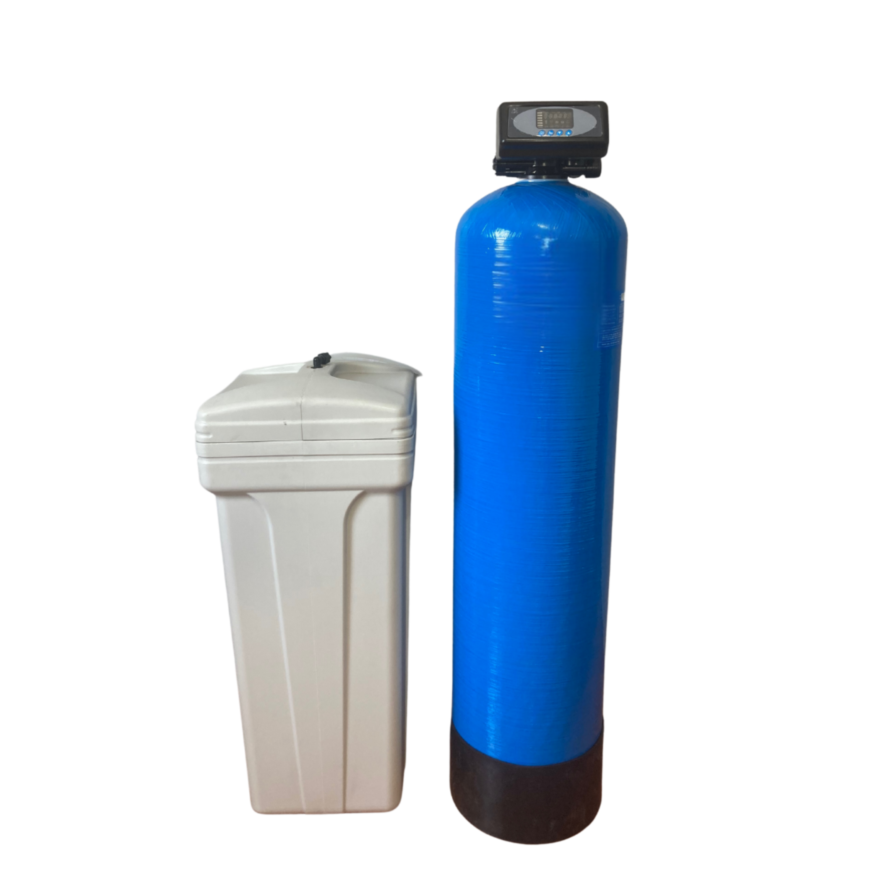
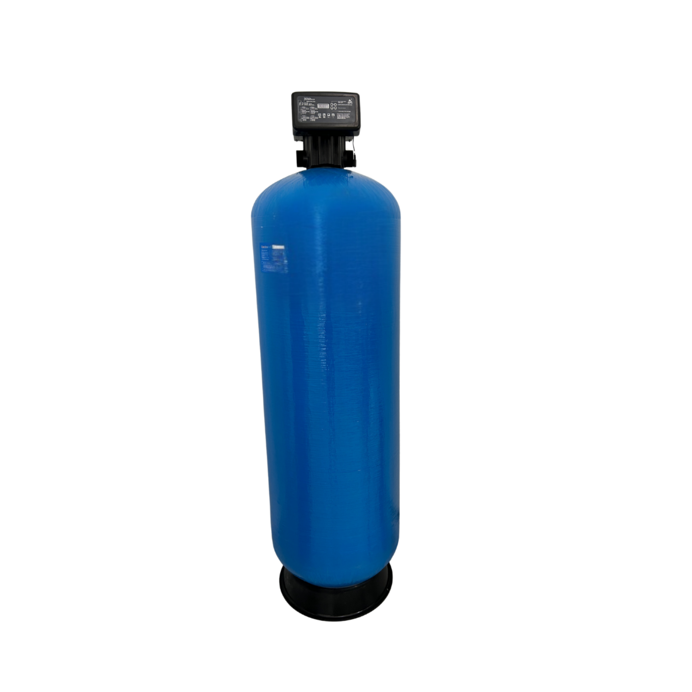

Soluções em engenharia hídrica


FILTROS CENTRAIS
Retenção de sedimentos, leveza, proteção de tubulações e equipamentos.
saiba mais...
OSMOSE REVERSA (DESSALINIZAÇÃO)
Sistema de alta eficiência para remoção de minerais pesados da água.
saiba mais...
FILTRO PARA REMOVER DUREZA
Solução ideal para remoção de dureza (Cálcio e Magnésio) da água.
saiba mais...
FILTRO PARA REMOVER SÓLIDOS E TURBIDEZ
Cor alterada e sedimentos na caixa d’água são sintomas graves de falta de tratamento.
saiba mais...
FILTROS PARA REMOVER FLUORETO, NITRATO, NITRITO
Flúor, nitratos e nitritos são comuns em águas de poço e, acima dos limites legais, representam sérios riscos à saúde
saiba mais...
FILTRO PARA TRATAR TANINOS ( MATÉRIA ORGÂNICA)
Tecnologia de troca iônica para remoção de taninos e impurezas orgânicas.
saiba mais...